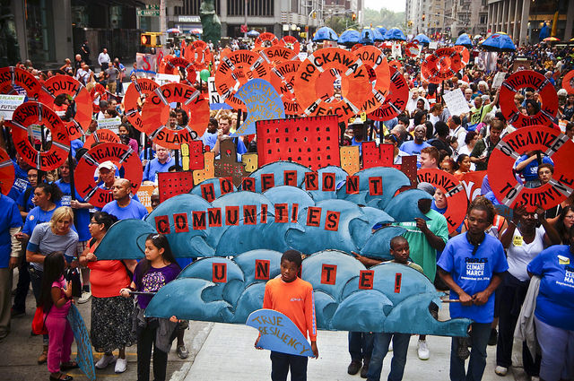

What's the solution??
Climate change is one of the most complex issues facing us today. It involves many dimensions – science, economics, society, politics and moral and ethical questions – and is a global problem, felt on local scales, that will be around for decades and centuries to come.

To first stop climate change we have to reduce the flow of heat trapping green house gasses in atmosphere either by reducing sources of the gases or creating/enhancing tools which would take up thies gases. This process of doing the required change is called as mitigation
The usual and famous solutions for global warming are lowering Pollution, afforestation, sustainable development, Waste management, and all of these solutions majorly need the government and other big organizations.
This is a very big,complex,harmful problem and to solve it we have to join our forces together and work these solutions and also should worry about the wnvironment more than the profits. It is a learning not only for governments but also to we the common people. If people give the importance to this problem a better and fast solution can be found easily.
